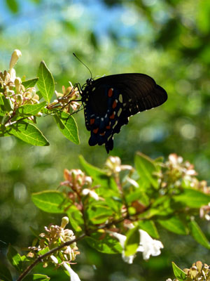

From out of the chrysalis, or pupa, comes an adult butterfly. Her body is sleek and light, her wings quickly unfold wide. But she is not yet ready for flight. The wings are soft and require a few hours of rest before blood flows to them. An adult butterfly, like a caterpillar, is often hungry. The butterfly drinks its food however. With a long probiscus, or straw-like "nose", the nectar sugary of flowers is a perfect meal for a butterfly.
While fluttering about the air, finding a mate is the other constant mission. Adult butterflies are either male or female, and pair up to produce more eggs and more future butterflies. Being airborne and beautiful does not mean butterflies are safe from predators, however. Spiders may be hiding inside or under the petals of flowers. Frogs have quick, sticky tongues and eat butterflies who are not wary. Snakes, ants, dragonflies, and even some people will gobble up butterflies also, wings and all.